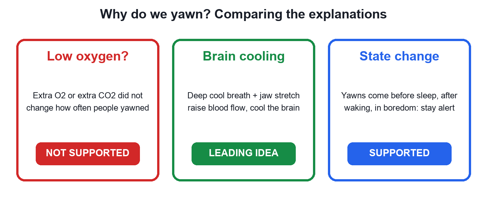
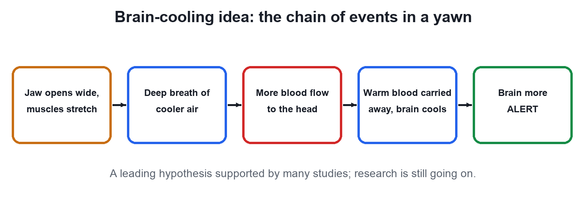

Why Do We Yawn?
Video not playing? Watch on Instagram · YouTube
It isn't low oxygen. The leading idea is brain cooling, and yawns are contagious, especially between people who are close.
Download the short notesPDF, 205 KB · solved examples, practice set and answer key That's all the videos in this chapter so far Back to Human body
Key points
- Extra oxygen does not reduce yawning, so 'low oxygen' is not the reason.
- Leading idea: brain cooling: jaw stretch, a deep cool breath and more blood flow cool the brain.
- Yawns come with state changes: before sleep, after waking, in boredom.
- Yawns are contagious, more among close ones; babies yawn even in the womb.
The oxygen myth
Many people think we yawn to get more oxygen. But when volunteers breathed extra oxygen (or extra carbon dioxide), they yawned just as often. So the oxygen idea is not supported.

Brain cooling, step by step

A yawn stretches the jaw and pulls in a deep breath of cooler air; blood flow to and from the head increases, and the brain cools slightly. A cooler brain is thought to work more efficiently, helping us stay alert. Research is still going on, so treat this as the leading explanation, not the final word.
Contagious yawns and yawns before birth
Seeing, hearing or even reading about a yawn can trigger one, and it spreads more between family and friends. Ultrasound scans show babies yawning in the womb, where they do not breathe air at all: another reason yawning is not simply about oxygen.
Quick quiz
4 questions. Choose an answer for each, then submit to see your score and the explanations.